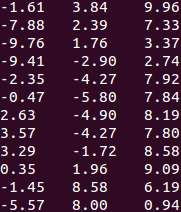
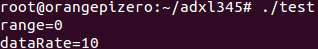
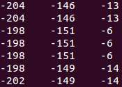

真的不容易啊。整个战略的最后一步已经成功地迈出了一只脚！只要搞定Linux驱动程序开发（在Linux上驱动各种嵌入式外设），那么我就可以把底层硬件和上层应用连接在一起了，真正做到全栈！
上一篇《第一个Linux驱动程序（一）——aMsg的open()、read()和write()（驱动程序的基本结构）》中我已经涉足了Linux驱动程序开发，但是并没有操作实际的硬件。这一篇我将以非常熟悉的ADXL345加速度传感器为例，来演示如何使用Linux操作I2C设备，并且我分别使用用户态驱动和内核态驱动来实现，以开拓思路。
ADXL345的操作已经在《51单片机使用ADXL345加速度传感器模块》中讲的非常透彻了，另外也可以参考Adafruit_ADXL345项目的实现，或者《Arduino使用ADXL345加速度传感器模块》中Adafruit_ADXL345_U.h与Adafruit_ADXL345_U.cpp两个文件。
这次要实现的驱动程序（不管是用户态驱动还是内核态驱动），要实现这么三个功能：1、获取/设置数据范围（加速度值域）；2、获取/设置采样频率；3、读取加速度值。
=================阶段一：用户态驱动程序=================
先来看看用户态的驱动程序，应该非常好理解。
首先需要搞清楚的是，如何在用户空间中操作I2C设备。这个其实很简单。一般的开发板，硬件厂商提供的Linux系统都会封装好I2C适配器的驱动程序。所谓I2C适配器，就是一个控制SCL和SDA两条线的一个外设，在ARM系统中通常都集成在CPU中。硬件厂商负责封装之，然后注册到Linux内核中，以对外提供一个统一的接口。I2C驱动程序注册成功之后，就会在/dev目录下创建设备节点，一般是/dev/i2c-0、/dev/i2c-1等等。/dev/i2c-x就是第x条I2C总线。
要访问某条I2C总线，只需要在应用程序中open()该设备节点，使用ioctl()配置各种参数，最后使用read()和write()系统调用就可以了。
比如在我的Orange P上i（Raspberry Pi上也一样），我把ADXL345接在第0号I2C总线上，那么就可以这么打开设备文件：
//打开I2C适配器
int fd=open("/dev/i2c-0",O_RDWR);
成功打开设备文件后，就需要设置I2C从设备的地址。ADXL345的设备地址是0x53，那么就这么设置：
//禁用10位地址 ioctl(fd,I2C_TENBIT,0); //设置I2C从设备地址 ioctl(fd,I2C_SLAVE,0x53);
I2C的设备地址可以是10为也可以是7位，为了保险起见，最好显式禁用10位地址。通过I2C_SLAVE命令设置好从地址0x53之后，以后对fd的所以read()和write()操作都会自动加上这个从地址。
这时，如果要向ADXL345中地址为0x12的寄存器写入数据0x88，那么可以这样：
uint8_t buf[2]; buf[0]=0x12; buf[1]=0x88; write(fd,buf,2);
第一个写入的字节0x12就是地址，第二个写入的字节0x88就是数据。如果要写入n个字节，那么buf[0]就是地址，buf[1]到buf[n]就是n个数据字节，然后调用一次write(fd,buf,n+1)就行了。
如果要从ADXL345中地址为0x12的寄存器中读取一个字节，那么可以这样：
uint8_t addr=0x12; write(fd,&addr,1); uint8_t data=0; read(fd,&data,1);
此时数据就在data中了。如果要读取N个字节，就这样：
uint8_t addr=0x12; write(fd,&addr,1); uint8_t data[N]; read(fd,data,N);
只要知道I2C的时序，这些都可以猜出来。
知道了怎么在Linux应用程序中操作I2C从设备，那么直接把单片机中的代码搬过来就是咯～下面是我封装的代码。
adxl345.h：
#ifndef ADXL345_H
#define ADXL345_H
#include <stdint.h>
//可选数据范围
typedef enum
{
ADXL345_RANGE_16_G = 0b11, // +/- 16g
ADXL345_RANGE_8_G = 0b10, // +/- 8g
ADXL345_RANGE_4_G = 0b01, // +/- 4g
ADXL345_RANGE_2_G = 0b00 // +/- 2g
}
ADXL345_range_t;
//可选采样率
typedef enum
{
ADXL345_DATARATE_3200_HZ = 0b1111, // 1600Hz
ADXL345_DATARATE_1600_HZ = 0b1110, // 800Hz
ADXL345_DATARATE_800_HZ = 0b1101, // 400Hz
ADXL345_DATARATE_400_HZ = 0b1100, // 200Hz
ADXL345_DATARATE_200_HZ = 0b1011, // 100Hz
ADXL345_DATARATE_100_HZ = 0b1010, // 50Hz
ADXL345_DATARATE_50_HZ = 0b1001, // 25Hz
ADXL345_DATARATE_25_HZ = 0b1000, // 12.5Hz
ADXL345_DATARATE_12_5_HZ = 0b0111, // 6.25Hz
ADXL345_DATARATE_6_25HZ = 0b0110, // 3.13Hz
ADXL345_DATARATE_3_13_HZ = 0b0101, // 1.56Hz
ADXL345_DATARATE_1_56_HZ = 0b0100, // 0.78Hz
ADXL345_DATARATE_0_78_HZ = 0b0011, // 0.39Hz
ADXL345_DATARATE_0_39_HZ = 0b0010, // 0.20Hz
ADXL345_DATARATE_0_20_HZ = 0b0001, // 0.10Hz
ADXL345_DATARATE_0_10_HZ = 0b0000 // 0.05Hz
}
ADXL345_dataRate_t;
//begin()可能的错误码
typedef enum
{
ADXL345_OK = 0,
ADXL345_NO_I2C_ADAPTER = 1,
ADXL345_NO_DEVICE = 2
}
ADXL345_error_t;
class ADXL345
{
private:
int fd;
public:
ADXL345();
~ADXL345();
//初始化ADXL345，i2cDev为指定的I2C适配器节点，如/dev/i2c-0
ADXL345_error_t begin(const char* i2cDev);
//获取数据范围
ADXL345_range_t getRange();
//设置数据范围
void setRange(ADXL345_range_t range);
//获取采样速率
ADXL345_dataRate_t getDataRate();
//设置采样速率
void setDataRate(ADXL345_dataRate_t dataRate);
//获取X轴上的加速度，单位是m/s^2
double getX();
//获取Y轴上的加速度，单位是m/s^2
double getY();
//获取Z轴上的加速度，单位是m/s^2
double getZ();
private:
//向指定寄存器写入一个字节
void i2cWriteU8(uint8_t addr,uint8_t data);
//从指定寄存器读取一个字节
uint8_t i2cReadU8(uint8_t addr);
//从指定寄存器读取两个字节（低地址在前），构成16位有符号整数
int16_t i2cReadS16(uint8_t addr);
};
#endif
adxl345.cpp：
#include "adxl345.h"
#include <unistd.h>
#include <stdlib.h>
#include <fcntl.h>
#include <stdint.h>
#include <sys/stat.h>
#include <sys/ioctl.h>
#include <linux/i2c.h>
#include <linux/i2c-dev.h>
#define ADXL345_DEVICE_ADDR 0x53 // I2C ADDRESS, assumes ALT address pin low
#define ADXL345_DEVICE_ID 0xE5 // Device ID
//寄存器地址
#define ADXL345_REG_DEVID 0x00 // Device ID
#define ADXL345_REG_BW_RATE 0x2C // Data rate and power mode control
#define ADXL345_REG_POWER_CTL 0x2D // Power-saving features control
#define ADXL345_REG_DATA_FORMAT 0x31 // Data format control
#define ADXL345_REG_DATAX0 0x32 // X-axis data 0
#define ADXL345_REG_DATAX1 0x33 // X-axis data 1
#define ADXL345_REG_DATAY0 0x34 // Y-axis data 0
#define ADXL345_REG_DATAY1 0x35 // Y-axis data 1
#define ADXL345_REG_DATAZ0 0x36 // Z-axis data 0
#define ADXL345_REG_DATAZ1 0x37 // Z-axis data 1
ADXL345::ADXL345()
{
fd=-1;
}
ADXL345::~ADXL345()
{
if(fd>=0)
close(fd);
}
ADXL345_error_t ADXL345::begin(const char* i2cDev)
{
//打开I2C适配器
fd=open(i2cDev,O_RDWR);
if(fd<0)
return ADXL345_NO_I2C_ADAPTER;
//禁用10位地址
ioctl(fd,I2C_TENBIT,0);
//设置I2C从设备地址
ioctl(fd,I2C_SLAVE,ADXL345_DEVICE_ADDR);
//读取Device ID
uint8_t devID=i2cReadU8(ADXL345_REG_DEVID);
//如果不是ADXL345
if(devID!=ADXL345_DEVICE_ID)
return ADXL345_NO_DEVICE;
//启动电源，开始测量
i2cWriteU8(ADXL345_REG_POWER_CTL,0x08);
return ADXL345_OK;
}
ADXL345_range_t ADXL345::getRange()
{
uint8_t format=i2cReadU8(ADXL345_REG_DATA_FORMAT);
return (ADXL345_range_t)(format&0x03);
}
void ADXL345::setRange(ADXL345_range_t range)
{
uint8_t format=i2cReadU8(ADXL345_REG_DATA_FORMAT);
format&=~0x0F;
format|=range;
//确保FULL-RES置位
format|=0x08;
i2cWriteU8(ADXL345_REG_DATA_FORMAT,format);
}
ADXL345_dataRate_t ADXL345::getDataRate()
{
uint8_t rate=i2cReadU8(ADXL345_REG_BW_RATE);
return (ADXL345_dataRate_t)(rate&0x0F);
}
void ADXL345::setDataRate(ADXL345_dataRate_t dataRate)
{
i2cWriteU8(ADXL345_REG_BW_RATE,dataRate);
}
double ADXL345::getX()
{
int16_t rawX=i2cReadS16(ADXL345_REG_DATAX0);
return rawX*(9.8*0.004);
}
double ADXL345::getY()
{
int16_t rawY=i2cReadS16(ADXL345_REG_DATAY0);
return rawY*(9.8*0.004);
}
double ADXL345::getZ()
{
int16_t rawZ=i2cReadS16(ADXL345_REG_DATAZ0);
return rawZ*(9.8*0.004);
}
void ADXL345::i2cWriteU8(uint8_t addr,uint8_t data)
{
if(fd<0)
return;
uint8_t buf[2];
buf[0]=addr;
buf[1]=data;
write(fd,buf,2);
}
uint8_t ADXL345::i2cReadU8(uint8_t addr)
{
if(fd<0)
return 0;
write(fd,&addr,1);
uint8_t data=0;
read(fd,&data,1);
return data;
}
int16_t ADXL345::i2cReadS16(uint8_t addr)
{
if(fd<0)
return 0;
write(fd,&addr,1);
uint8_t buf[2];
read(fd,buf,2);
return buf[0]|(buf[1]<<8);
}
可以写一个Demo：
test.cpp：
#include "adxl345.h"
#include <stdio.h>
#include <unistd.h>
#include <string.h>
int main()
{
ADXL345 adxl345;
int ret=adxl345.begin("/dev/i2c-0");
if(ret!=ADXL345_OK)
{
perror("open /dev/i2c-0 error");
return 1;
}
adxl345.setRange(ADXL345_RANGE_16_G);
adxl345.setDataRate(ADXL345_DATARATE_100_HZ);
printf("range=%d\n",adxl345.getRange());
printf("dataRate=%d\n",adxl345.getDataRate());
while(true)
{
printf("%.2lf\t%.2lf\t%.2lf\n",adxl345.getX(),adxl345.getY(),adxl345.getZ());
sleep(1);
}
return 0;
}
对应的makefile：
test: adxl345.o test.o g++ adxl345.o test.o -o test adxl345.o: adxl345.h adxl345.cpp g++ -c adxl345.cpp -o adxl345.o test.o: test.cpp g++ -c test.cpp -o test.o clean: rm *.o
把ADXL345的SCL和SDA分别接到Orange Pi的SCL0和SDA0上，make并运行该程序，可以看到每隔一秒输出一下三轴加速度数据：

=================阶段二：内核态驱动程序=================
内核态驱动程序才是正统的驱动程序，才能够发挥硬件所用的功能，当然，代价就是调试困难、没有二进制可移植性。
大多数I2C设备的驱动程序，可以看作是字符设备+I2C调用。所以，第一步就是得知如何在驱动程序中调用I2C。好在Linux提供了一整套I2C子系统，为驱动程序中操作I2C设备提供了标准化的支持。当然，这个I2C子系统最后也是依赖与硬件厂商实现的I2C适配器驱动程序的。
在内核中，要操作I2C总线，首先需要包含头文件：
#include <linux/i2c.h>
在对总线操作之前，首先要获得“I2C适配器“对象：
//I2C总线适配器 static struct i2c_adapter *adapter; //.... //获取第i条I2C总线适配器 adapter=i2c_get_adapter(i);
获取适配器以后，就可以通过适配器操作挂在这条总线上的I2C从设备了。所有操作都叫做消息，可以用结构体struct i2c_msg表示。一个struct i2c_msg就是一个消息，也就是一次交互操作。比如我要向ADXL345（设备地址0x53）的0x12寄存器写入字节0x88，那么代码如下：
struct i2c_msg msg; uint8_t buf[2]; //从设备地址为0x53 msg.addr=0x53; //模式为写 msg.flags=0; //数据长度为2字节 msg.len=2; //数据缓冲区指向buf msg.buf=buf; //第一个字节是寄存器地址 buf[0]=0x12; //第二个字节是数据 buf[1]=0x88; //发送1条消息 i2c_transfer(adapter,&msg,1);
可以看到，这里的操作和用户态驱动异曲同工，都是连续写入两个字节，第一个是寄存器地址，第二个是数据。
而从寄存器中读取一个字节也和用户态是一样的：
struct i2c_msg msg; uint8_t addr=0x12; uint8_t data; //从设备地址为0x53 msg.addr=0x53; //模式为写 msg.flags=0; //数据长度为1字节 msg.len=1; //数据缓冲区指向addr msg.buf=&addr; //写入一字节的地址 i2c_transfer(adapter,&msg,1); //从设备地址为0x53 msg.addr=0x53; //模式为读 msg.flags=I2C_M_RD; //数据长度为1字节 msg.len=1; //数据缓冲区指向data msg.buf=&data; //读取一字节的数据 i2c_transfer(adapter,&msg,1)
只要知道I2C的时序，读写方法也不唯一。
硬件层搞定以后，只要按照Linux字符设备的规范来封装就好了～
adxl345.h：
#ifndef ADXL345_H
#define ADXL345_H
//ioctl()获取数据范围的命令
#define ADXL345_GET_RANGE 101
//ioctl()设置数据范围的命令
#define ADXL345_SET_RANGE 102
//ioctl()获取采样率的命令
#define ADXL345_GET_DATARATE 103
//ioctl()设置采样率的命令
#define ADXL345_SET_DATARATE 104
//可选数据范围
typedef enum
{
ADXL345_RANGE_16_G = 0b11, // +/- 16g
ADXL345_RANGE_8_G = 0b10, // +/- 8g
ADXL345_RANGE_4_G = 0b01, // +/- 4g
ADXL345_RANGE_2_G = 0b00 // +/- 2g
}
ADXL345_range_t;
//可选采样率
typedef enum
{
ADXL345_DATARATE_3200_HZ = 0b1111, // 1600Hz
ADXL345_DATARATE_1600_HZ = 0b1110, // 800Hz
ADXL345_DATARATE_800_HZ = 0b1101, // 400Hz
ADXL345_DATARATE_400_HZ = 0b1100, // 200Hz
ADXL345_DATARATE_200_HZ = 0b1011, // 100Hz
ADXL345_DATARATE_100_HZ = 0b1010, // 50Hz
ADXL345_DATARATE_50_HZ = 0b1001, // 25Hz
ADXL345_DATARATE_25_HZ = 0b1000, // 12.5Hz
ADXL345_DATARATE_12_5_HZ = 0b0111, // 6.25Hz
ADXL345_DATARATE_6_25HZ = 0b0110, // 3.13Hz
ADXL345_DATARATE_3_13_HZ = 0b0101, // 1.56Hz
ADXL345_DATARATE_1_56_HZ = 0b0100, // 0.78Hz
ADXL345_DATARATE_0_78_HZ = 0b0011, // 0.39Hz
ADXL345_DATARATE_0_39_HZ = 0b0010, // 0.20Hz
ADXL345_DATARATE_0_20_HZ = 0b0001, // 0.10Hz
ADXL345_DATARATE_0_10_HZ = 0b0000 // 0.05Hz
}
ADXL345_dataRate_t;
#endif
adxl345.c：
#include "adxl345.h"
#include <linux/kernel.h>
#include <linux/module.h>
#include <linux/init.h>
#include <linux/fs.h>
#include <asm/uaccess.h>
#include <linux/i2c.h>
MODULE_LICENSE("Dual BSD/GPL");
#define ADXL345_MAJOR 224 //主设备号
#define ADXL345_NAME "ADXL345" //设备名
#define ADXL345_I2C_ADAPTER_NO 0 //I2C总线编号
#define ADXL345_MAX_LINE 64 //最大数据行长度
#define ADXL345_DEVICE_ADDR 0x53 //I2C从地址
#define ADXL345_DEVICE_ID 0xE5 //Device ID
//寄存器地址
#define ADXL345_REG_DEVID 0x00 // Device ID
#define ADXL345_REG_BW_RATE 0x2C // Data rate and power mode control
#define ADXL345_REG_POWER_CTL 0x2D // Power-saving features control
#define ADXL345_REG_DATA_FORMAT 0x31 // Data format control
#define ADXL345_REG_DATAX0 0x32 // X-axis data 0
#define ADXL345_REG_DATAX1 0x33 // X-axis data 1
#define ADXL345_REG_DATAY0 0x34 // Y-axis data 0
#define ADXL345_REG_DATAY1 0x35 // Y-axis data 1
#define ADXL345_REG_DATAZ0 0x36 // Z-axis data 0
#define ADXL345_REG_DATAZ1 0x37 // Z-axis data 1
//I2C总线适配器
static struct i2c_adapter *adapter;
//从指定寄存器读取一个字节
static uint8_t i2cReadU8(uint8_t addr)
{
struct i2c_msg msg;
uint8_t data;
//从设备地址为ADXL345_DEVICE_ADDR
msg.addr=ADXL345_DEVICE_ADDR;
//模式为写
msg.flags=0;
//数据长度为1字节
msg.len=1;
//数据缓冲区指向addr
msg.buf=&addr;
if(i2c_transfer(adapter,&msg,1)<0)
return 0;
//从设备地址为ADXL345_DEVICE_ADDR
msg.addr=ADXL345_DEVICE_ADDR;
//模式为读
msg.flags=I2C_M_RD;
//数据长度为1字节
msg.len=1;
//数据缓冲区指向data
msg.buf=&data;
if(i2c_transfer(adapter,&msg,1)<0)
return 0;
return data;
}
//从指定寄存器读取两个字节（低地址在前），构成16位有符号整数
static int16_t i2cReadS16(uint8_t addr)
{
struct i2c_msg msg;
uint8_t data[2];
//从设备地址为ADXL345_DEVICE_ADDR
msg.addr=ADXL345_DEVICE_ADDR;
//模式为写
msg.flags=0;
//数据长度为1字节
msg.len=1;
//数据缓冲区指向addr
msg.buf=&addr;
if(i2c_transfer(adapter,&msg,1)<0)
return 0;
//从设备地址为ADXL345_DEVICE_ADDR
msg.addr=ADXL345_DEVICE_ADDR;
//模式为读
msg.flags=I2C_M_RD;
//数据长度为2字节
msg.len=2;
//数据缓冲区指向data
msg.buf=data;
if(i2c_transfer(adapter,&msg,1)<0)
return 0;
return data[0]|(data[1]<<8);
}
//向指定寄存器写入一个字节
static void i2cWriteU8(uint8_t addr,uint8_t data)
{
struct i2c_msg msg;
uint8_t buf[2];
//从设备地址为ADXL345_DEVICE_ADDR
msg.addr=ADXL345_DEVICE_ADDR;
//模式为写
msg.flags=0;
//数据长度为2字节
msg.len=2;
//数据缓冲区指向buf
msg.buf=buf;
buf[0]=addr;
buf[1]=data;
i2c_transfer(adapter,&msg,1);
}
//read操作，返回字符串"<accX>\t<accY>\t<accZ>\n"
static ssize_t adxl345_read(struct file* file,char* buf,size_t count,loff_t* offset)
{
char line[ADXL345_MAX_LINE];
int16_t accX=i2cReadS16(ADXL345_REG_DATAX0);
int16_t accY=i2cReadS16(ADXL345_REG_DATAY0);
int16_t accZ=i2cReadS16(ADXL345_REG_DATAZ0);
int len;
//内核不支持浮点运算，暂时先返回字符串形式的整数
sprintf(line,"%d\t%d\t%d\n",accX,accY,accZ);
len=strlen(line);
len=count<len?count:len;
copy_to_user(buf,line,len);
return len;
}
//ioctl操作
static long adxl345_ioctl(struct file* file,unsigned int cmd,unsigned long arg)
{
//如果是获取数据范围
if(cmd==ADXL345_GET_RANGE)
{
//从ADXL345获取数据值域
uint8_t range=i2cReadU8(ADXL345_REG_DATA_FORMAT)&0x03;
//把值复制到用户空间
copy_to_user((uint8_t*)arg,&range,1);
return 0;
}
//如果是设置数据范围
if(cmd==ADXL345_SET_RANGE)
{
//从ADXL345获取数据格式
uint8_t format=i2cReadU8(ADXL345_REG_DATA_FORMAT);
uint8_t range;
//从用户空间复制参数值
copy_from_user(&range,(uint8_t*)arg,1);
format&=~0x0F;
format|=range;
//确保FULL-RES置位
format|=0x08;
//把新的值写入寄存器
i2cWriteU8(ADXL345_REG_DATA_FORMAT,format);
return 0;
}
//如果是获取采样率
if(cmd==ADXL345_GET_DATARATE)
{
//从ADXL345读取采样率
uint8_t dataRate=i2cReadU8(ADXL345_REG_BW_RATE)&0x0F;
//把值复制到用户空间
copy_to_user((uint8_t*)arg,&dataRate,1);
return 0;
}
//如果是设置采样率
if(cmd==ADXL345_SET_DATARATE)
{
uint8_t dataRate;
//从用户空间复制参数值
copy_from_user(&dataRate,(uint8_t*)arg,1);
//写入寄存器
i2cWriteU8(ADXL345_REG_BW_RATE,dataRate);
return 0;
}
return -EFAULT;
}
//填充file_operations结构体
static struct file_operations adxl345_fops=
{
.owner=THIS_MODULE,
.read=adxl345_read,
//Kernel 3.0之后，ioctl变为unlocked_ioctl，参数列表也变了
.unlocked_ioctl=adxl345_ioctl
};
//模块初始化代码
static int adxl345_init_module(void)
{
int ret;
uint8_t devID;
//获取I2C总线
adapter=i2c_get_adapter(ADXL345_I2C_ADAPTER_NO);
if(!adapter)
{
printk("Unable to get i2c adapter\n");
return -ENODEV;
}
//读取Device ID
devID=i2cReadU8(ADXL345_REG_DEVID);
//如果不是ADXL345
if(devID!=ADXL345_DEVICE_ID)
{
printk("No ADXL345 found\n");
return -ENODEV;
}
//启动电源，开始测量
i2cWriteU8(ADXL345_REG_POWER_CTL,0x08);
//注册字符设备（这是Old way）
ret=register_chrdev(ADXL345_MAJOR,ADXL345_NAME,&adxl345_fops);
//注册失败的处理
if(ret<0)
{
printk("Unable to register\n");
return ret;
}
return 0;
}
//模块清理代码
static void adxl345_cleanup_module(void)
{
//注销字符设备
unregister_chrdev(ADXL345_MAJOR,ADXL345_NAME);
}
module_init(adxl345_init_module);
module_exit(adxl345_cleanup_module);
这里需要注意几个问题：
1、内核态是不支持浮点运算的，如果有浮点运算，在链接时会报错；
2、3.0版本以后的内核，把struct file_operations里面的ioctl指针改为了unlocked_ioctl，参数列表也变了；
3、ioctl的cmd参数，要回避系统预定义的值，尽量使用100以后的数。
我本来想在read()中返回字符串形式的浮点数，但是后来发现内核不能做浮点运算，于是只能用整数。问题2导致struct file_operations初始化要把ioctl改为unlocked_ioctl。至于问题3，我被坑得最惨。我一开始四个命令用的是1,2,3,4，结果用命令2的时候，应用程序调用ioctl()总返回OK，可是驱动程序根本没有被调用。后来才知道系统有一些预定义的命令数值，要避开。
编写的Makefile：
obj-m := adxl345.o KERNEL_DIR := /lib/modules/$(shell uname -r)/build PWD := $(shell pwd) all: make -C $(KERNEL_DIR) SUBDIRS=$(PWD) modules clean: rm *.o *.ko *.mod.c .PHONY:clean
然后编写一个测试用的应用程序：
test.c：
#include <stdio.h>
#include <unistd.h>
#include <fcntl.h>
#include <stdint.h>
#include <sys/ioctl.h>
#include "adxl345.h"
int main()
{
int fd=open("/dev/adxl345",O_RDWR);
if(fd<0)
{
perror("open /dev/adxl345 error");
return 1;
}
uint8_t range=ADXL345_RANGE_2_G;
ioctl(fd,ADXL345_SET_RANGE,&range);
range=111;
ioctl(fd,ADXL345_GET_RANGE,&range);
printf("range=%d\n",range);
uint8_t dataRate=ADXL345_DATARATE_100_HZ;
ioctl(fd,ADXL345_SET_DATARATE,&dataRate);
dataRate=111;
ioctl(fd,ADXL345_GET_DATARATE,&dataRate);
printf("dataRate=%d\n",dataRate);
return 0;
}
在Orange Pi上运行命令：
make insmod adxl345.ko mknod /dev/adxl345 c 224 0 gcc test.c -o test ./test
可以看到test输出：

说明ioctl()的驱动编写是OK的。接着来测试read()方法：
cat /dev/adxl345
可以看到不断输出数据：

每一行数据都是一次读取，每次读取的三个整数都是ADXL345寄存器的原始值，整数中每一个1代表4mg。